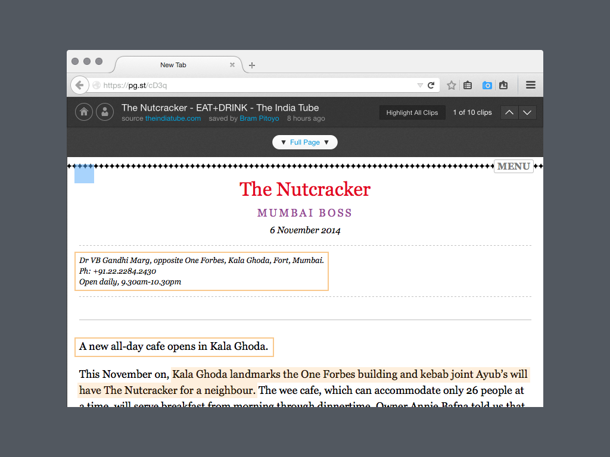
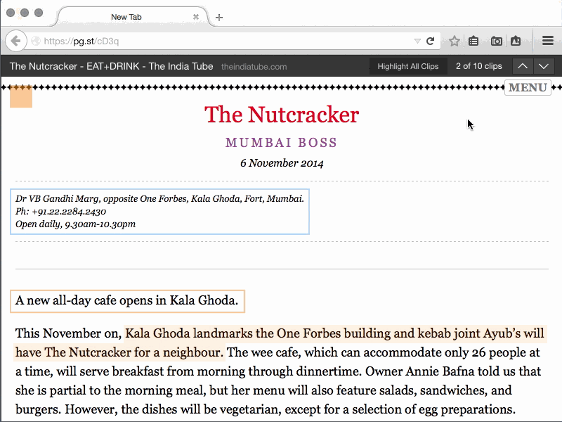
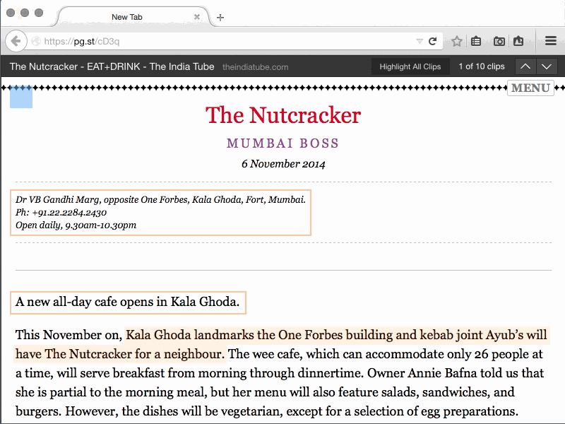

<div class="container">
	<div class="row">
		<div class="col-sm-12 col-md-12 col-lg-12">
  		
			<h1>Individual Shot Page: Archived Page</h1>
			
			
			
		  <h3>Navigate between clips</h3>
			
			
			<h3>Highlight and un-highlight clips</h3>
			
			
			<h3>View, add and receive comments on clips</h3>
			
			
		</div>
	</div>
	<!-- Pagination. If you have more than one page, set the multipage variable in the Frontmatter to true. Editing the pagination code happens in /_includes/homePagination.html.
		NOTE: This is currently broken in the Jekyll ver of this template.
		-->
		{% if page.multipage %}
			{% include homePagination.html %}
		{% endif %}
